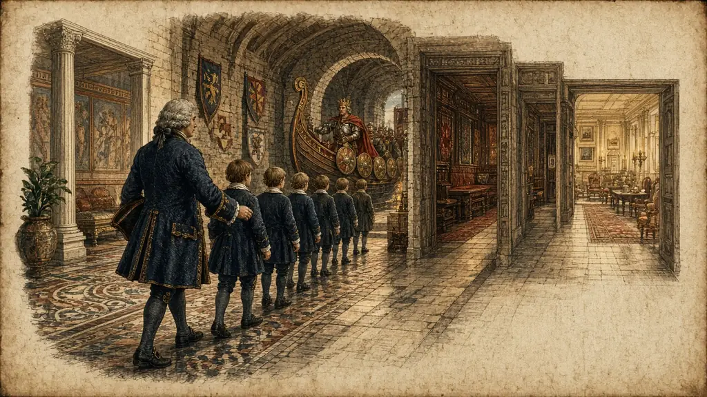

A schoolmaster in 1730 invented words made of dates. You will build a house with one room for every century and fill it with events.

← Against the Clock · The whole course · Three Digits, One Picture →
England in the 1720s. A clergyman and schoolmaster, Richard Grey, has a problem every history teacher knows. His pupils can recite the story of the Norman Conquest, but they cannot tell you the year. They can name the kings, but not the order. Dates, he finds, are the first thing to fall out of a pupil's head.
A date is a number, and we saw in the second part what the mind does with numbers: it lets go. Grey decided to do something about it.
In 1730 he published a small book called Memoria Technica, 'the technical memory'. In it he gave a code in which letters stood for digits, so that a date became a word, or a made-up word, which a pupil could learn like any other. The date of an event was hidden in a nonsense word that sounded a little like its name.
The strange words were never popular. They were clever but hard to learn: the code itself had to be memorised, and the words were dull. But the idea was sound, and it was the same as ours: turn a number into something you can say and see.
We can do better with what we have. A date has two halves. The first two digits name the century; the last two name the year. There are only a few centuries that matter, and they can be rooms. There are a hundred possible year-endings, and they are the hundred pictures you already have from the numbers part.
So a date becomes a place and a picture. The place is the century's room. The picture is the year-ending, joined to the event itself. For 1066: the room of the eleventh century, a judge (66), and a battlefield. You will see it, and you will not need to learn a nonsense word.
Say what you think each one means, then open it.
Richard Grey's Memoria Technica was published in 1730. The details of his code are not needed here.
A year has two parts: the century (which room) and the last two digits (which picture).
| Year | Room | Year picture | Event scene |
|---|---|---|---|
| 1066 | 11th century | judge (66) | A judge bangs a gavel at Hastings. |
| 1215 | 13th century | doll (15) | Barons force King John to sign a scroll with a giant doll's hand. |
| 1492 | 15th century | bone (92) | Columbus's ship has a giant bone for a mast. |
| 1789 | 18th century | fib (89) | A revolutionary tells a huge fib at the gates of the Bastille. |
| 1815 | 19th century | tail (15) | Napoleon trips over a lion's tail at Waterloo. |
| 1969 | 20th century | ship (69) | A silver ship lands on the moon with a flag. |
Have a go before you open any answer. A rough attempt teaches you more than a perfect model you only read.
Say the answer first, then tap the card.
Learn these seven years in order: 1066, 1215, 1492, 1789, 1815, 1969, 1989. Walk through seven rooms. Type the years back, one per line.
Judge, doll, bone, fib, tail, ship, fib again: which room is each in?
The list has gone. Type what you remember, one item per line.
These reach back to earlier rooms. Answer in your head or out loud, then check.
Which ten dates would you most like to keep for good? In which rooms would they sit?